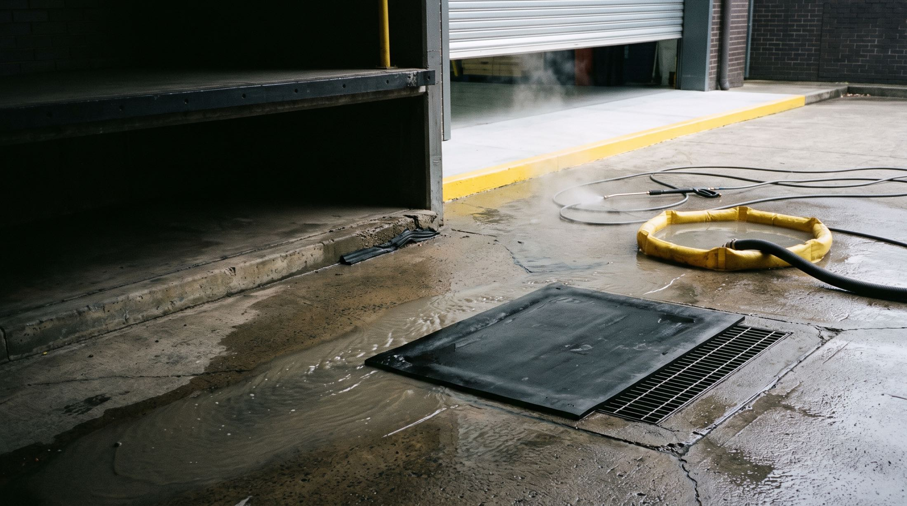

The discharge zone, and the surfaces around it — on the same calendar.
The grease pad beneath the discharge, the bin room and the dock take the fallout the system carries outside; the entry, the alfresco paving and the awning take the street. Summit keeps all of them on the exhaust program’s calendar — washwater contained, condition recorded.
Nobody audits the dining room. They audit the bin room.
The surfaces that carry your risk are the ones nobody photographs: the hardstand under the exhaust discharge, the waste area, the dock your staff cross forty times a shift. They accumulate slowly, fail an inspection quickly, and a slip on any one of them is a claim against you. The surfaces your customers judge are the ones out front: the entry, the alfresco paving, the awning and the shopfront.
Summit treats them the way it treats the exhaust system — on a planned cycle, brought to a defined condition, with the found and finished state photographed and filed with the rest of the compliance record. Not a callout after the inspector has been.
The areas that carry
the most risk.
Grease pads & discharge zones
The hardstand beneath an exhaust discharge takes the fallout the system does not catch — a slip surface and a roof-drainage problem in one.
Bin rooms & waste areas
The first thing an inspector looks at and the last thing anyone attends to. Degreased, deodorised and photographed on cycle.
Loading docks & hardstand
Docks, ramps and walkways — the routes your staff and deliveries cross daily, kept trafficable by the calendar, not by incident.
Entries, alfresco & awnings
The surfaces your customers judge you on — footpath dining, entry ways, awnings and soffits, brought back to condition without closing the front door.
Shopfronts & footpath frontage
Glazing surrounds, signage faces and the paving at the threshold — the small front-of-shop work that sits on the same calendar as the back of house.
Rooftop around the plant
Where a discharge has left a grease trail on the roof, the surrounds are brought back and containment is proposed as a register item.
Where the washwater goes
is your liability.
Most pressure washing ends with grease, detergent and food waste running into the nearest stormwater grate. That water leaves your site as your discharge — and as the occupier, the exposure stays with you. It is the part of this trade nobody advertises, and the reason it is scoped first.
Contained, not chased
Drains are protected and washwater is contained within the work area before the first trigger is pulled — containment is part of the setup, not a reaction.
Collected & removed
Contaminated water is recovered and taken off site for lawful disposal, or directed to trade waste where your agreement permits it.
Recorded like everything else
Method and disposal noted on the service record, so if anyone ever asks how the water was handled, the answer is already written down.
Scoped before it is proposed
Every site is assessed for drainage, fall and containment first. If a surface cannot be pressure-washed without a discharge problem, that is said before the job, not after.
Assess to record,
on one cycle.
Assess
Surfaces, substrate, drainage and containment scoped at the survey; frequency set to how hard the area works.
Contain
Drains protected and the work area contained before any water is used.
Pressure-wash
Hot or cold pressure and the right detergent for the substrate — effective on the deposit, safe on the surface.
Recover & record
Washwater recovered, condition photographed, next visit already on the calendar.
Photographed found,
photographed finished.
This is the easiest service in the trade to under-deliver, because the evidence washes away. So the record is the deliverable here too — each area photographed in its found and finished condition, filed with the rest of your compliance evidence.
Pressure washing & surrounds
| Area | Method | Result |
|---|---|---|
| Grease pad · discharge | Hot + degreaser | Brought to condition · photo pair |
| Bin room & surrounds | Hot pressure | Brought to condition · photo pair |
| Loading dock & ramp | Cold pressure | Brought to condition · photo pair |
| Entry & alfresco paving | Cold pressure | Brought to condition · photo pair |
| Dock seal · north | Inspection | Perished · register item |
| Washwater | Recovered | Removed off site |
Put the discharge zone on the calendar.
One survey scopes the surfaces, the drainage and the containment — and the first visit arrives with a record attached.
enquiries@summitam.au